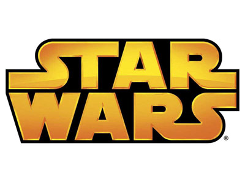

STAR WARS
I: Скрытая угроза
II: Атака клонов
III: Месть ситхов
IV: Новая надежда
V: Империя наносит
VI: Возвращение джедая
VII: Пробуждение силы
VIII: Последние джедаи
История создания
- Ещё в студенческие годы Джордж Лукас задумывал снять героическую космическую фантазию с космическими перестрелками в стиле фантастических комиксов и киносериалов, выходивших в США в 1940-е — 1950-е годы и «отмерших» к концу 1960-х. Основное влияние на «Звёздные войны» оказали космические оперы вроде сериала «Флэш Гордон» и франшизы о Баке Роджерсе, а также их прародитель — литературная серия Эдгара Берроуза «Джон Картер на Марсе». Сюжетно Оригинальная трилогия «Звёздных войн» восходит к самурайским фильмам Акиры Куросавы (большей частью «Трём негодяям в скрытой крепости»). Также на сценарий фильма повлияли многие другие фантастические произведения, такие как роман «Космический жаворонок» основателя жанра космооперы Эдварда Элмера Смита и роман «Дюна» Фрэнка Герберта.
- В мае 1971 года в Каннах Лукас подписал со студией «Юнайтед артистс» контракт на съёмку фильма «Звёздные войны», а 1 августа того же года название «The Star Wars» зарегистрировано Американской ассоциации кинокомпаний.
Началом истории «Звёздных войн» принято считать 1976 год. Именно тогда появилась одноимённая книга-новеллизация А. Д. Фостера (в издании указано авторство лишь Джорджа Лукаса), рассказывающая о событиях «Эпизода IV: Новая надежда». Продюсеры 20th Century Fox, опасаясь провала фильма в прокате, решили выпустить книгу раньше, чтобы оценить её успешность. В 1977 году на конгрессе Всемирного сообщества научной фантастики Джордж Лукас получил специальную премию «Хьюго»[3] за этот роман.
- Первый фильм вышел 25 мая 1977 года под названием «Звёздные войны». Фильм имел огромный кассовый успех, что фактически спасло компанию 20th Century Fox от угрожавшего ей тогда банкротства. Когда сомнения в окупаемости проекта отпали, первый фильм получил подзаголовок «Новая надежда», и вскоре за ним появились два продолжения — «Империя наносит ответный удар» (режиссёр Ирвин Кершнер, 1980) и «Возвращение джедая» (режиссёр Ричард Маркуанд, 1983).
С самого начала отличительной чертой франшизы «Звёздные войны» стало массовое производство сопутствующих товаров, таких как пластмассовые фигурки персонажей, технических средств из фильмов и других игрушек, футболок с символикой фильма и т. д. Успешные маркетинговые ходы Джорджа Лукаса позволяли поддерживать у публики высокий уровень интереса к «Звёздным войнам» в перерывах между выходами фильмов. Доходы от продажи этих товаров превосходят доходы от проката самих фильмов. Ту же цель преследовало создание фильмов-спин-оффов: помимо признанного провальным «Праздничного спецвыпуска» (1978), были сняты телефильмы «Караван смельчаков. Приключения эвоков» (1984) и «Эвоки. Битва за Эндор» (1985), а также мультсериалы «Эвоки» (1985—1986) и «Дроиды» (1985—1986). В 1980-х годах была выпущена серия компьютерных игр для различных платформ по мотивам фильмов трилогии. Компания «West End Games» выпускала настольные ролевые игры по «Звёздным войнам».
- В течение всех лет существования важной составляющей франшизы были комиксы. Основными издателями комиксов «Звёздных войн» были компании Marvel Comics (1977—1987 и с 2015) и Dark Horse Comics (1991—2014), а также газеты Los Angeles Times Syndicate (1979—1984) и Watertown Daily Times (1979—1984).
После спада интереса к франшизе в конце 1980-х годов последовал новый всплеск интереса, связанный с выходом в издательстве «Bantam Spectra» романов «Трилогии Трауна» Тимоти Зана. Успех романов породил выпуск в свет романов десятков различных авторов: в последующие годы ежегодно публиковалось более 10 книг по этой вселенной. Второй составляющей роста интереса стал выпуск ряда успешных компьютерных игр, прежде всего серии симуляторов «X-wing» и шутеров серии Dark Forces/Jedi Knight.
- В 1997 году, 20 лет спустя после выхода первого фильма, оригинальная трилогия была переработана с добавлением компьютерных спецэффектов и выпущена в повторный прокат. В повторном прокате фильмы собрали, соответственно, 256,5 млн, 124,2 млн и 88,7 млн долларов.
В 1999 году на экраны был выпущен фильм «Звёздные войны. Эпизод I: Скрытая угроза», который положил начало новой трилогии — предыстории оригинальной.
В 2000-е годы вышли мультфильм Звёздные войны: Войны клонов (режиссёр Дэйв Филони, 2008) и мультсериал Войны клонов (2008), продолжавший его. В 2014 году стартовал мультсериал «Звёздные войны: Повстанцы», заменивший «Войны клонов».
В конце 2012 года анонсирован седьмой фильм, являющийся продолжением 6 эпизода, который вышел в прокат 17 декабря в России, Великобритании, Латинской Америке и азиатских странах и 18 декабря 2015 в США[8].
10 декабря 2016 года состоялась премьера кинофильма «Изгой-один. Звёздные войны: Истории».
В марте 2015 анонсирован восьмой фильм, его мировая премьера состоялась 8 декабря 2017 года. В конце 2017 года стало известно, что восьмая часть саги получила название «Последние джедаи».
10 мая 2018 года состоялась премьера второго спин-оффа Звёздных войн о Хане Соло «Хан Соло. Звёздные войны: Истории».
Моя почта:dafcor22260@gmail.com